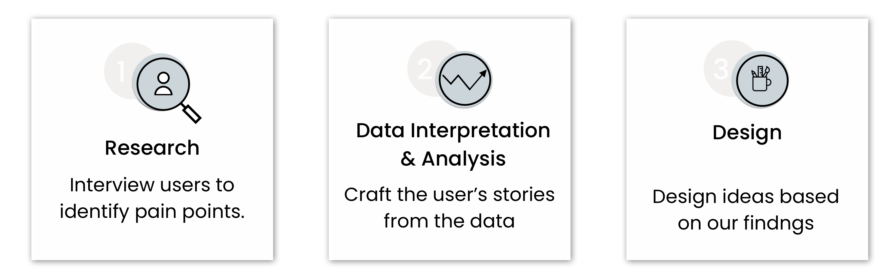
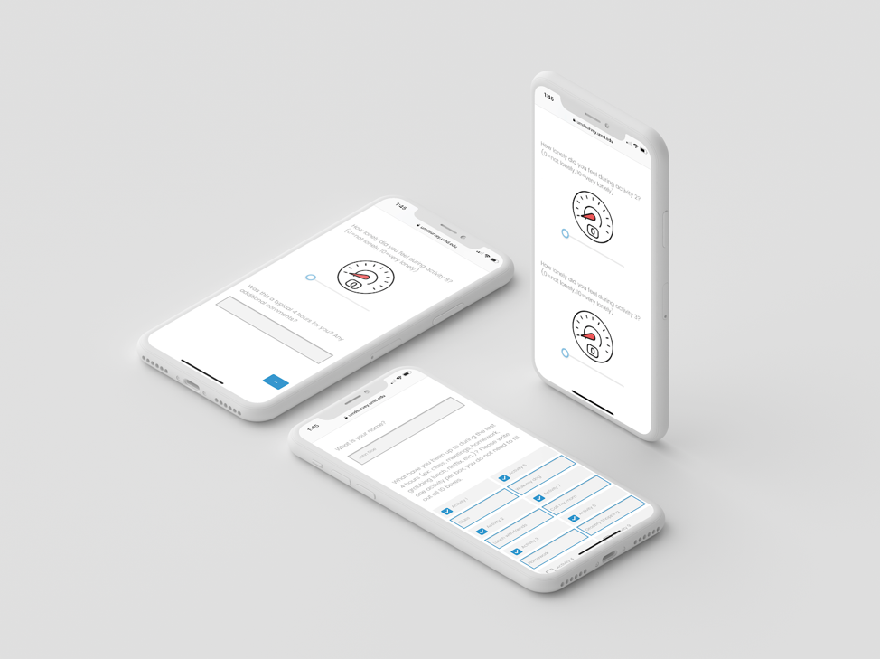
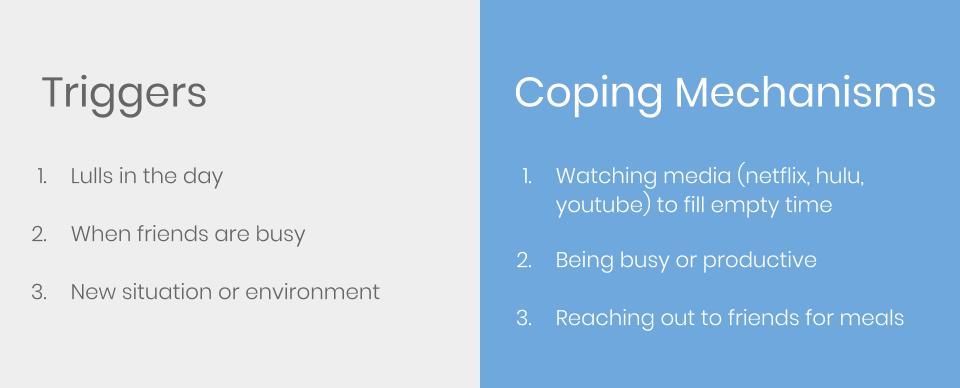
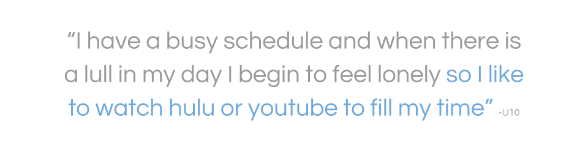
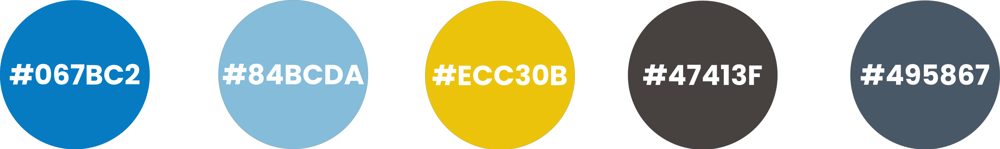

Loneliness can be defined as ‘the gap between someone’s desire for connection and the reality of their connections.’
The goal of our project was to account for how different groups in society are affected by loneliness, identify the group we
would like to target, and design a way to reduce its impact.
The Problem
Loneliness affects many members of society; however, undergraduate and graduate students experience loneliness in unique ways.
Often times, moving away from home and entering a new environment comes with many challenges. Additionally, there are many factors
and pressures placed on students that can lead to feelings of loneliness
The Goal
Through our project we aimed to identify the unique factors and pressures on college age students that lead to loneliness and design
a way to reduce its impact.
The Process

Research & Analysis
The first half of the project was spent conducting research to understand loneliness, how it affects people in their everyday lives, and how they cope.
We used three different methods to gather the data we needed to solve this problem: survey, time diary, and follow-up interview.
Survey
In order to find appropriate participants for the next steps in the research process as well as structure our diary study, we surveyed 21 students at five
universities. We asked about demographic information, their current social environments, and four main questions about their loneliness levels.
Time Diary Study
Loneliness is a difficult feeling to track, so in order to identify the moments our users felt lonely we had conducted a time diary study with 10 participants.
It lasted one week and included 4 daily check-ins where we asked the user to fill out the activities, they had completed during that particular time slot and
record their loneliness levels during those activities on a scale from 0 to 10 (0 being not lonely and 10 being the highest feelings of loneliness).
We analyzed over 200 responses and discovered that the highest levels of loneliness were recorded when participants were using various streaming entertainment services.

Debrief Interview
In order to gain more insight into the ratings each participant gave, we conducted debrief interviews. Using the time diary responses from each participant, personalized
questions were formulated about each activity and what triggered their loneliness in that moment. We discussed:
Their highest loneliness activities
Their coping methods for loneliness
Activities where they felt the least lonely
Their responses to the initial screener survey questions
If there are any services that they wish were available to them on or off campus to help cope with loneliness
Their response to our questions about counseling services in the initial screener survey
After the interviews and a total data analysis was complete, it became clear that there were three common triggers of loneliness and three common coping mechanisms.


Personas
We built two personas based on the data gathered. These personas helped our team in the ideation stage of design.
Design
Our design process began with brainstorming ideas based on the triggers and coping mechanisms of our users and resulted in a total of 60 sketches.
To narrow down and make a final decision on the design we wanted to move forward with, we used the dot voting method.
Ultimately, we chose to create a collaborative show watching experience because we believed this would be a unique way to connect people with each
other despite distance.
Low Fidelity Prototype
When we began working on our low fidelity prototype, we decided that we wanted to achieve the following goals through our design:
Creating an intuitive experience with great learnability potential
Making it easy for people to connect with their friends
Have the ability to fully customize their experience without it feeling overwhelming with too many options
With those goals in mind we went to the whiteboard and mapped out the important features we would need to create a finished project
that met those objectives and translated it to a design.
Usability Testing
After building out the paper prototype, we performed a pilot test and three-hour long usability tests to receive feedback on our
initial design, identify pain points, and make necessary improvements.
Wireframes
Using the updated paper prototype, we translated our design into wireframes and eventually a high-fidelity prototype.
Our main goal was to design a calming and comfortable experience which was reflected in the calming blue colors of our color palette.

Final Product
Our final prototype in action.
Sign Up - Subscriptions The sign up process gives the user the ability to select their particular subscriptions.
Sign Up - Preferences Here the user can add their preferences based on genre, favorite actor, and more.
Connect With Friends This is where users can select the friends they want to add to their friend's list as well as search and invite friends to the platform
that may not have an account yet.
The Dashboard The dashboard gives the user suggestions based on their preferences, friends, and recently watched.
The Inbox & Friends List There is an inbox, where users can see the messages they have recieved as well as their friend's
responses to comments made. Additionally there is the user's friends list where active friends have a green light and friends
who are currently watching a show or movie have a blue light. Selecting a person allows you to invite them
to watch something or chat.
Watch Preferences Selecting a show reveals more details about the show, as well as allows users to choose how they
want to watch their show: with friends, with comments, or alone
While Watching When users click play, they are taken to their show with many options. The user can view comments, depicted by blue bubbles,
make a comment depicted by the yellow circle, adjust their settings, and livechat.
To view our final prototype on Figma, click below: